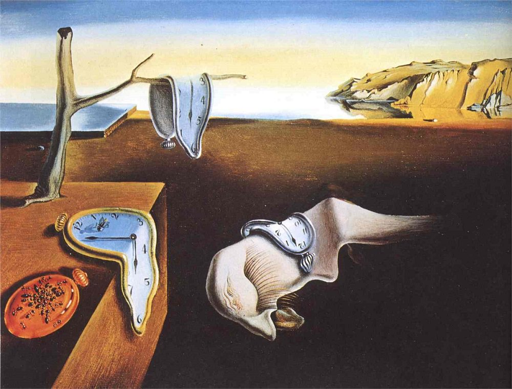
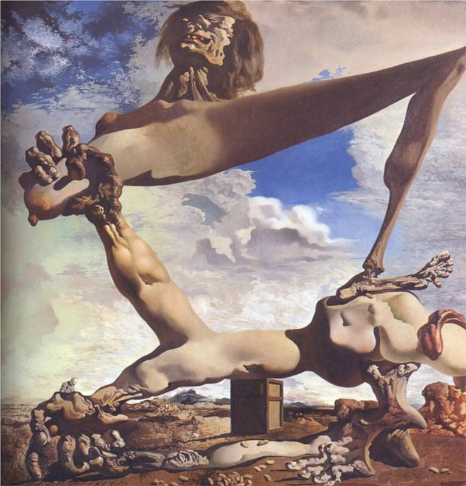
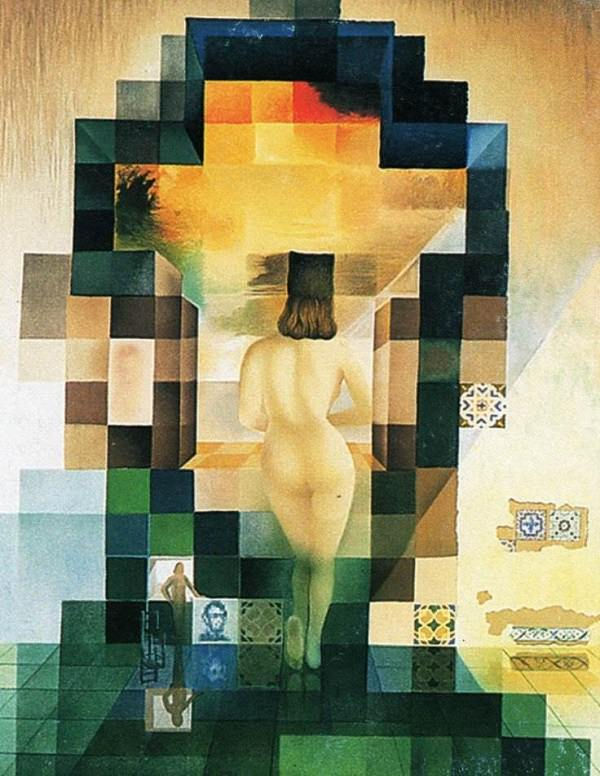

Salvador Dali
Famous Paintings
1920's
The Enigma of Desire
The Great Masturbator
The First Days of Spring
1930's
Persistence of Memory

Retrospective Bust of a Woman
Soft Construction with Boiled Beans

1940's
The Face of War
Geopoliticus Child Watching the Birth of the New Man
The Temptation of Saint Anthony
1950's
The Madonna of Port Lligat
Christ of Saint John of the Cross
Head Exploding
1960's
TTuna Fishing
L'Eephante Giraffe
The Ecumenical Concil
1970's
The Hallucinogenic Toreador
Gala Contemplating the Mediterranean

1980's
The Swallow's Tail
Head of Warrior